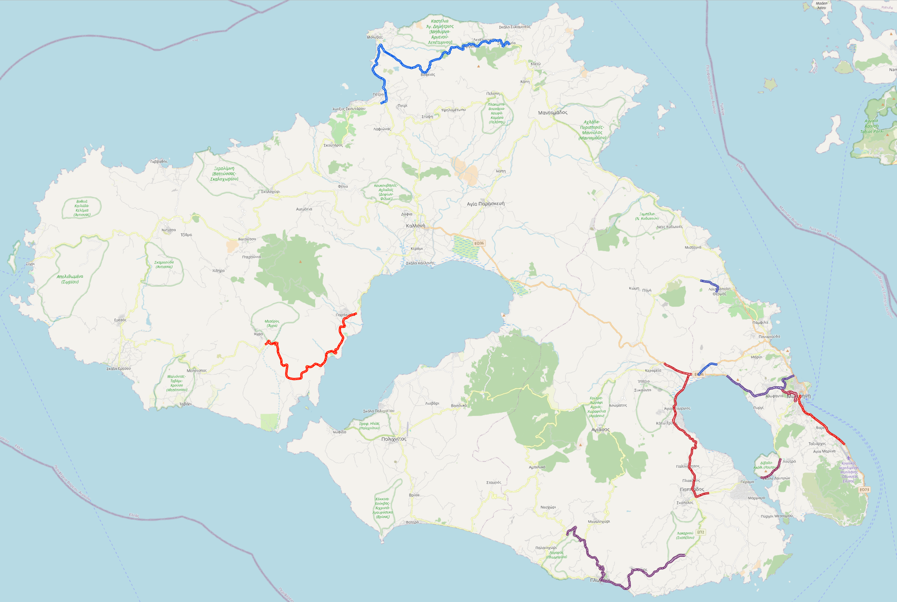
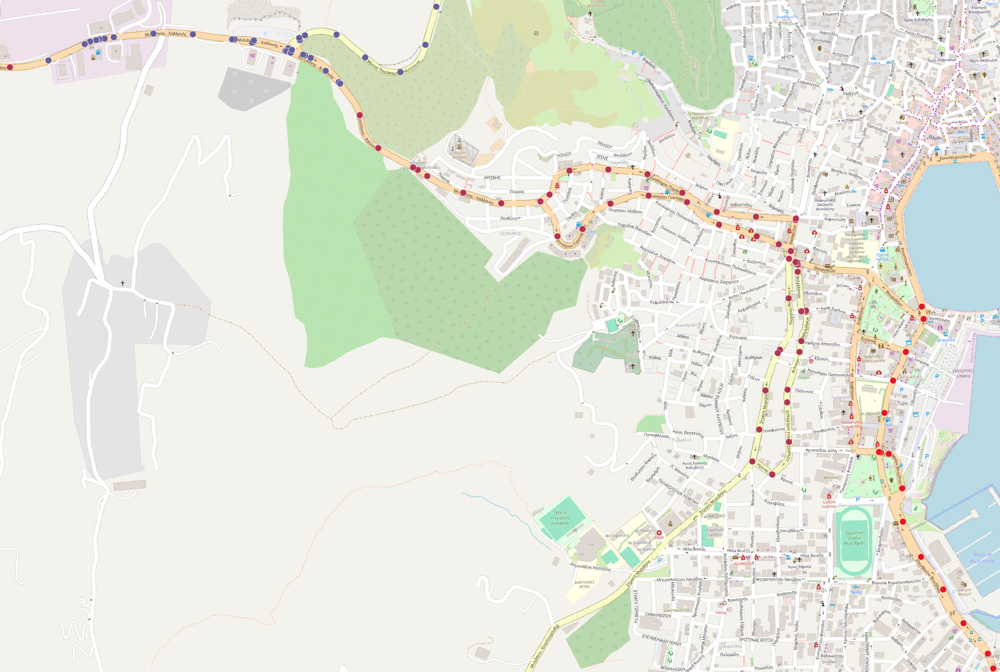

9 Generating vehicle data
It is fundamental to have a reliable and consistent dataset to be able to check your schema, functions, views, etc at any time. Granted, many times one would seek to acquire a set of production data, anonymized, in order to have a ‘realistic’ dataset. However, often synthetic data are necessary. Either because of the nature of the project where data is sensitive and should not leave the server, or because we need to generate data before we release a new feature, or simply because we need a consistently re-creatable dataset.
9.1 Generate vehicles
This is the most straight forward scenario. Generate 100 random fleet_ids and insert them to an empty schema.
But if we do just that, then we will have generated initial states at the time of insertion. Most probably will need to change the vehicle’s state a couple of times. So the scenario then becomes: Generate 100 random fleet_id and update their initial state’s timestamp to approximately 10 days ago.
This is an excellent point to mention that the following CTE approach will not work and show why.
EXPLAIN (COSTS OFF) WITH data AS (
SELECT
v1_0_0.insert_vehicle(
UPPER(
SUBSTR(
REGEXP_REPLACE(md5(i::text), '[[:digit:]]', '', 'g'), 1, 3
)
) || '-' || LPAD(i::text, 3, '0')) AS id,
CURRENT_TIMESTAMP - INTERVAL '10 days' +
((FLOOR(random() * 10) * 60 * 60) || ' seconds')::INTERVAL AS timestamp
FROM
generate_series(1, 100) i
)
UPDATE
public.vehicle_state
SET
timestamp = data.timestamp
FROM
data
WHERE
vehicle_id = data.id
;
QUERY PLAN
---------------------------------------------------------
Update on vehicle_state
CTE data
-> Function Scan on generate_series i
-> Hash Join
Hash Cond: (vehicle_state.vehicle_id = data.id)
-> Seq Scan on vehicle_state
-> Hash
-> CTE Scan on data
(8 rows)However two distinct queries within the same transaction will work.
BEGIN;
SELECT
v1_0_0.insert_vehicle(
UPPER(
SUBSTR(
REGEXP_REPLACE(md5(i::text), '[[:digit:]]', '', 'g'), 1, 3
)
) || '-' || LPAD(i::text, 3, '0')) AS id
FROM
generate_series(1, 100) i
;
UPDATE
public.vehicle_state
SET
timestamp = timestamp - INTERVAL '10 days' +
random() * (INTERVAL '1 days' - INTERVAL '1 second') + INTERVAL '1 second'
;
COMMIT;9.2 Generate states
The next step is to generate states. Let us assume that about 30% of the vehicle upon delivery, needed to be sent to the workshop for adjustments. The rest was unmanned, awaiting for personnel to patrol. The delivery process should not take more than 10 hours.
Implementation
WITH dsample AS (
SELECT
vehicle_id,
timestamp + random() * (INTERVAL '10 hours' - INTERVAL '1 second') + INTERVAL '1 second',
'decommissioned'::public.vehicle_state_enum
FROM
public.vehicle_state TABLESAMPLE BERNOULLI (30)
), sample AS (
SELECT
vs.vehicle_id,
timestamp + random() * (INTERVAL '10 hours' - INTERVAL '1 second') + INTERVAL '1 second',
'off duty'::public.vehicle_state_enum
FROM
public.vehicle_state vs
LEFT JOIN
dsample d ON vs.vehicle_id = d.vehicle_id
WHERE
d.vehicle_id IS NULL
UNION ALL
SELECT * FROM dsample
)
INSERT INTO
public.vehicle_state (vehicle_id, timestamp, state)
SELECT
*
FROM
sample
;9.3 The first patrol
Next step is to send some vehicles out for patrol. Ten vehicles which are currently unmanned, i.e. have state ‘off duty’, acquire personnel within an hour of their delivery and then went for patrol for anywhere between four and height hours.
Implementation
WITH sample AS (
SELECT
v.id as vehicle_id,
timestamp,
random() * (INTERVAL '1 hour' - INTERVAL '1 second') + INTERVAL '1 second' AS patrol_start,
random() * (INTERVAL '8 hours' - INTERVAL '4 hour') + INTERVAL '4 hour' AS patrol_duration
FROM
v1_0_0.vehicle_latest_state vl JOIN
public.vehicles v ON
v.fleet_id = vl.fleet_id
WHERE
state = 'off duty'
ORDER BY
random()
LIMIT
10
), on_duty AS (
INSERT INTO
public.vehicle_state (vehicle_id, timestamp, state)
SELECT
vehicle_id,
timestamp + patrol_start,
'on duty'
FROM
sample
RETURNING
*
), off_duty AS (
INSERT INTO
public.vehicle_state (vehicle_id, timestamp, state)
SELECT
vehicle_id,
timestamp + patrol_start + patrol_duration,
'off duty'
FROM
sample
RETURNING
*
)
SELECT * FROM on_duty
UNION ALL
SELECT * FROM off_duty;9.4 The patrol went places
Finally let us generate locations for the vehicles that went on patrol. This will get complex. We want to simulate the vehicles driving along a road, occasionally pausing, taking some turns to other roads, until their patrol ends or they reach a dead end. During their patrol, a tracker sends the vehicle’s location every minute.
This query is possible to be implemented with everything that has been covered so far. Yet it becomes much more elegant by using recursive CTEs and lateral, two severely underutilized PostgreSQL features.
Implementation
WITH RECURSIVE patrol_vehicles AS (
-- Step 1: Select the vehicles that went on patrol and remember when they
-- started and how many minutes it lasted
SELECT
vehicle_id,
timestamp AS ticker_start,
FLOOR(EXTRACT(epoch from next_timestamp - timestamp) / 60) AS tick_count,
ROW_NUMBER() OVER () AS rn -- Give an attribute to be able to join with the roads
FROM (
SELECT
vehicle_id,
timestamp,
state,
LEAD(timestamp, 1) OVER state_window AS next_timestamp,
LEAD(state, 1) OVER state_window AS next_state
FROM
vehicle_state
WINDOW
state_window AS (PARTITION BY vehicle_id ORDER BY timestamp ASC)
) foo
WHERE
state = 'on duty' AND
next_state = 'off duty'
), road_selection AS (
-- Step 2: Select an equal amount of random large-ish roads
SELECT
*,
ROW_NUMBER() OVER () AS rn
FROM (
SELECT
osm_id,
way AS road, -- The geometry
ST_LineInterpolatePoint(way, 0.0) AS start_point, -- The starting point of the road (0% along the road),
ST_LineInterpolatePoint(way, 1.0) AS end_point -- The final point of the road (100% along the road),
FROM
osm_raw_data.planet_osm_roads
WHERE
highway IN ('primary', 'secondary', 'tertiary', 'residential') AND
ST_Length(way) > 1000.0
ORDER BY
random()
LIMIT (SELECT count(*) FROM patrol_vehicles)
)
), vehicle_roads AS (
-- Step 3: Assign a vehicle to a road
SELECT
*
FROM
road_selection JOIN
patrol_vehicles USING (rn)
), tracker_ticks AS (
-- Step 4: Recursively calculate the vehicle's travel along the road
-- assuming that the vehicle moves about 100 meters between ticks, unless
-- close to a junction
SELECT
vehicle_id,
ticker_start,
tick_count,
0 AS nticks, -- Starting at step 0
0.0::double precision AS fraction, -- Starting at 0% progress along the road
road,
start_point,
end_point
FROM
vehicle_roads
UNION ALL
SELECT
tt.vehicle_id,
ticker_start,
tick_count,
tt.nticks + 1, -- Increment the sequence step
CASE
WHEN tt.fraction >= 0.95 THEN 0.0 -- If the vehicle is near the end, reset progress to 0
WHEN tt.fraction + (100.0 / ST_Length(tt.road)) >= 0.95 THEN 0.95
ELSE tt.fraction + (100.0 / ST_Length(tt.road)) -- Otherwise, increment progress along the road
END,
CASE
WHEN tt.fraction >= 0.95 THEN nr.road -- Switch road when near the end
ELSE tt.road
END,
CASE
WHEN tt.fraction >= 0.95 THEN ST_LineInterpolatePoint(nr.road, 0.0) -- Set new start point for the next road
ELSE tt.start_point
END,
CASE
WHEN tt.fraction >= 0.95 THEN ST_LineInterpolatePoint(nr.road, 1.0) -- Set new end point for the next road
ELSE tt.end_point
END
FROM
tracker_ticks tt
LEFT JOIN LATERAL (
-- Select a road close to the end as the next road to move along to
SELECT
r.way AS road
FROM
osm_raw_data.planet_osm_roads r
WHERE
ST_DWithin(ST_LineInterpolatePoint(r.way, 0.0), tt.end_point, 0.0005) AND
highway IN ('primary', 'secondary', 'tertiary', 'residential')
ORDER BY
random() -- Do not always turn on the same heuristic
LIMIT
1
) nr ON
tt.fraction >= 0.95 -- Switch road if near the end of the current road
WHERE
tt.nticks < tt.tick_count -- Stop tracking at the end of patrol
), tracker_points AS (
-- Step 5: Construct the location + timestamp information
SELECT
vehicle_id,
ticker_start + (nticks || ' minutes')::INTERVAL AS timestamp,
CASE
WHEN random() < 0.2 THEN
-- 20% chance for some random pause (using the previous location)
LAG(ST_LineInterpolatePoint(road, fraction)) OVER (PARTITION BY vehicle_id ORDER BY nticks)
ELSE
-- Otherwise, calculate current position along the road
-- It will appear as the vehicle was lunging forward at times
ST_LineInterpolatePoint(road, fraction)
END AS location
FROM
tracker_ticks
)
-- Step 6: Populate the vehicle_location table
INSERT INTO
vehicle_location (vehicle_id, timestamp, location)
SELECT
vehicle_id,
timestamp,
location
FROM
tracker_points
WHERE
location IS NOT NULL;And the result is:

Or a detail in an urban environment: 